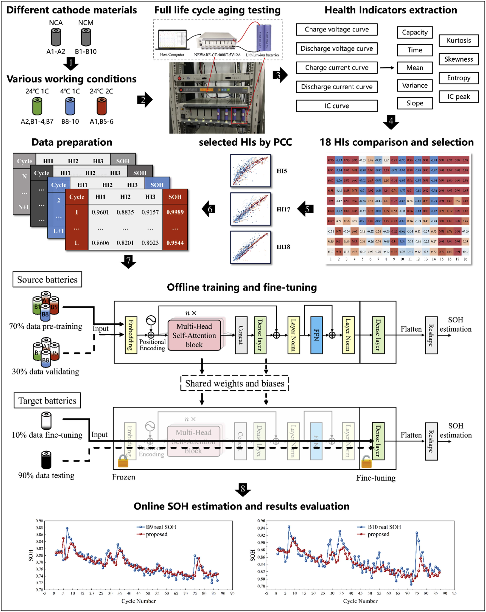
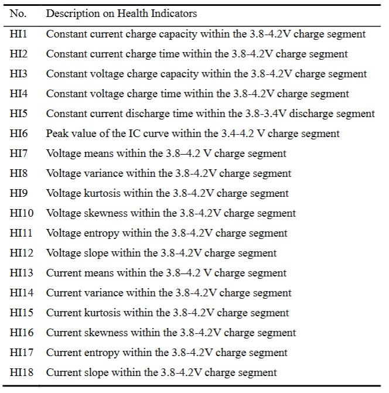
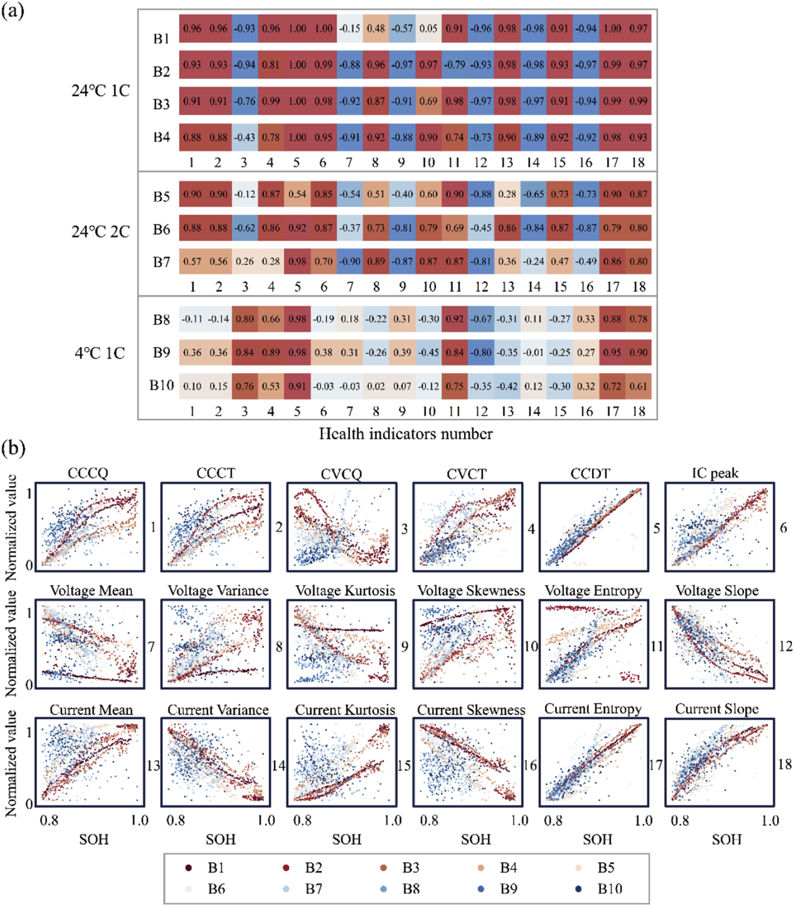
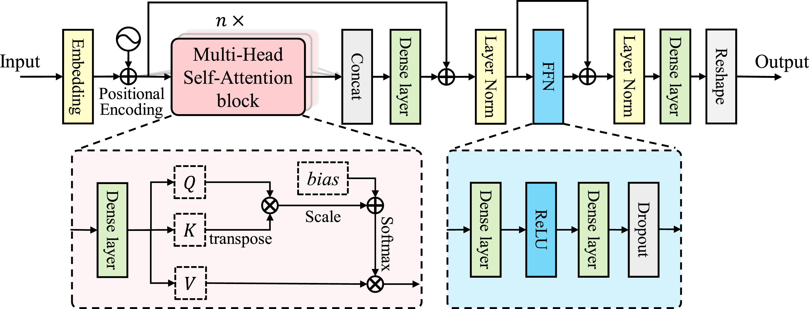
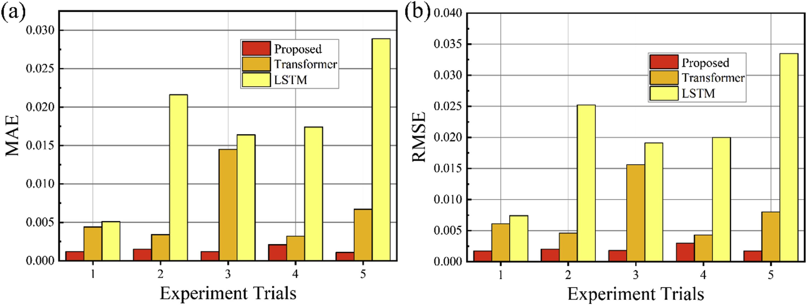
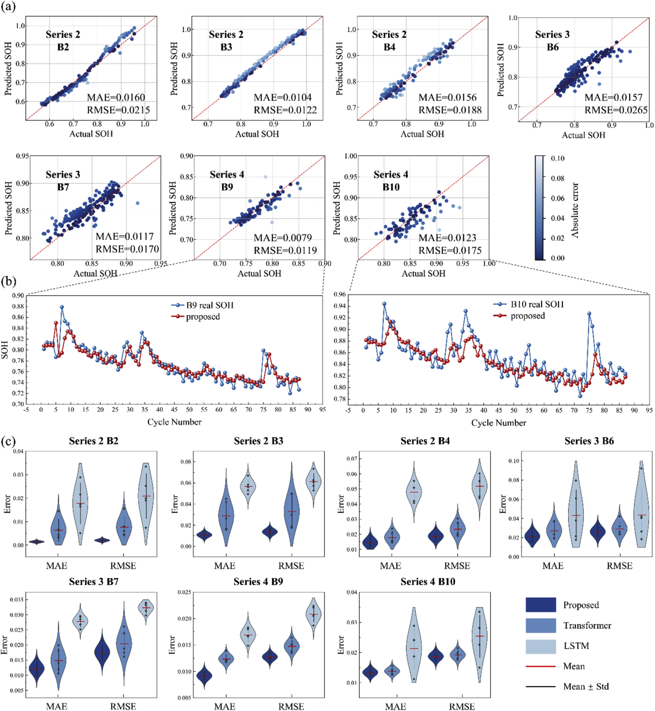
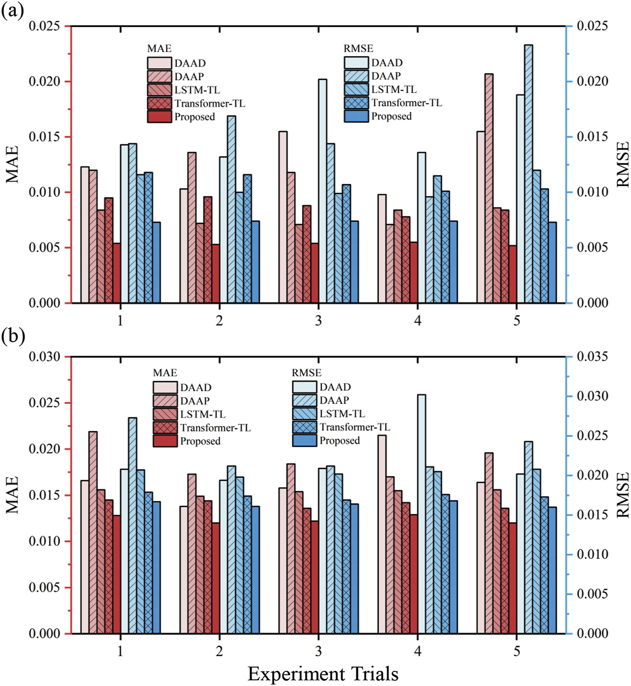

基于自注意力机制与深度迁移学习的锂电池SOH小样本在线估计方法——SDTL
前言
在新能源汽车和储能系统飞速发展的今天，锂离子电池作为核心储能元件，其健康状态（SOH）的精准监测直接关系到系统的安全运行与剩余寿命预测。现实工业场景中，运行工况千变万化，电池材料在不断迭代。对于新投入使用的电池，我们往往面临着一个严重问题——缺乏足够的历史老化数据来训练高精度的模型。
如何利用有限的早期数据，在不同材料、不同温度和不同充放电倍率下，实现对新电池SOH的快速、精准在线估计呢？
2025年发表在《Journal of Power Sources》上的论文Deep transfer learning enabled online state-of-health estimation of lithium-ion batteries under small samples across different cathode materials, ambient temperature and charge-discharge protocols提出了一种 基于自注意力机制的深度迁移学习（Self-attention-based Deep Transfer Learning, SDTL） 方法。该方法结合了Transformer架构的核心组件与迁移学习中的微调（Fine-tuning）策略，降低了高精度SOH估计对大规模历史数据的依赖。

一、SOH估计的痛点
在电池管理系统（BMS）的研究中，SOH估计有以下要求：
- 高精度：要求模型能捕捉电池内部复杂的电化学非线性老化特征。
- 广义性：要求模型能适应不同的正极材料和多变的工况。
- 低数据依赖：要求模型在新电池仅有少量循环数据时即可工作。
如何同时满足这三个要求是目前SOH估计所面临的困境。传统的数据驱动方法的训练（如CNN、LSTM）需要大量的全生命周期数据。一旦电池型号改变或者运行环境变化，原有模型将不再适用。针对此问题，作者提出了SDTL框架，其核心思想是：不从零开始学习，而是利用已有的历史数据去快速适应新任务。
二、 SDTL框架的构造
作者针对电池时序数据的特性，设计了一个包含 多源特征工程 、 自注意力特征提取 以及 参数微调迁移 的完整SDTL框架。
1. 多源特征工程
作者从统计学、电化学和时间维度提取了18个特征，即表征电池老化程度的健康因子（HIs）。
- 增量容量分析（ICA)：提取IC曲线的峰值，这是连接物理模型与数据驱动模型的桥梁，与电池内部活性锂损失密切相关。
- 充放电几何特征：包括恒流充电时间、恒压充电容量等。随着老化，极化阻抗增加，恒流充电阶段通常会缩短。
- 高阶统计特征与熵：该论文的一大亮点是引入了 样本熵（Sample Entropy）。在电池老化初期，电压曲线的均值和方差变化不明显，但随着SOH下降，电压、电流序列的信息熵会发生显著改变。熵值能够捕捉到这些微小的非线性信号波动。

作者使用了 皮尔逊相关系数（PCC） 进行特征筛选。结果表明，HI5（恒流放电时间）、HI17（电流熵）和 HI18（电流斜率）等指标在大多数工况下与SOH的相关性较高。该算法采用滑动窗口技术，将这些筛选后的高相关性因子作为模型输入。

2. 多头自注意力机制
该论文引入了Transformer的核心组件—— 多头自注意力机制（Multi-Head Self-Attention），以此来提高特征提取效率。
（1）自注意力机制
自注意力机制不依赖于时间步的顺序，它通过计算序列中每一个时间点与其他所有时间点之间的 关联度（Attention Score），自动为重要的数据片段分配更高的权重。
- 机制原理：模型通过训练学习Query（查询）、Key（键）和Value（值）三个矩阵。对于当前的SOH预测任务，模型能自动检索历史数据中哪些片段（Key）与当前状态（Query）最匹配，并提取对应的信息（Value）。
- 去噪与聚焦：在充电初期和末期的某些关键电压拐点，往往包含更多关于SOH的信息。自注意力机制会给这些区域分配高权重，而忽略平滑段的冗余信息或噪声。
（2）多头机制
该模型采用了 多头结构（Multi-Head），将特征空间映射到多个子空间同时观察。每个头独立进行注意力计算，最后利用Python将各头的计算结果拼接起来，形成对电池状态多方位的认知。这种机制增强了模型的非线性表达能力。
（3）位置编码
自注意力机制是并行处理数据的，其本身不具备时序观念。作者引入了基于正弦和余弦函数的位置编码，给每个输入数据打上独特的时间标记，使模型既能高效并行计算，又能遵守时间序列的物理逻辑。
3. 迁移策略
当面对一个新的电池，且只有其前10% 的早期数据时，如何预测剩余90%的SOH？该论文采用了 基于参数冻结与微调的深度迁移学习 来解决这一问题。
- 第一步：源域预训练（Pre-training） 利用一个数据量充足的源域电池训练模型，例如常温全生命周期数据的电池。在此阶段，模型学习到了锂电池老化的一般性规律，权重和偏置被充分优化，形成一个基础模型。
- 第二步：参数冻结（Freezing） 面对新电池任务时，作者保留了基础模型中大部分底层网络的参数。这些层负责提取通用的电池特征，将参数冻结，保持不变。这样做的好处在于节省了计算资源，又防止了在小样本数据上发生过拟合。
- 第三步：目标域微调（Fine-tuning） 微调的关键在于作者只解冻了模型的最后一层全连接层。利用新电池仅有的前10%数据，专门针对这一层进行反向传播训练。这层网络负责将提取到的特征映射到最终的SOH数值。由于只需要更新少量的参数，模型能够快速适应新电池的特性。

为何优于域适应（Domain Adaptation）？
传统的域适应方法（如DAAD、DAAP）通过复杂的损失函数强行对齐源域和目标域的数据分布。但在电池SOH估计中，不同工况的数据分布差异巨大，强行对齐会导致精度下降。该论文的微调策略，不假设分布相似，而是通过调整高层决策参数来适应差异，展现出了该模型的鲁棒性。
三、 实验验证
为了验证SDTL方法的有效性，作者从材料（NCM vs NCA）、倍率（1C vs 2C）到温度（24℃ vs 4℃）三方面设置变量，设计了涵盖四种不同工况系列（Series1-4）的实验方案。
1. 精度提升
在该研究采用的数据集中，SDTL方法的表现优于直接训练的Transformer和LSTM模型。
NCM电池案例：相比于未微调的Transformer模型，SDTL实现了将均方根误差（RMSE）有效降低。

低温表现（4℃）：在低温环境中，电池电化学特性呈现显著的迟钝性与非线性特征。SDTL 方法在此工况下仍实现了较低的MAE 表现，验证了其在极端温度条件下的泛化适应力。
2. 小样本学习表现
实验严格限制目标域电池仅使用 前10% 的数据进行微调。结果显示，仅凭这些少量数据，模型就能预测后续漫长的老化轨迹，甚至判定电池何时达到寿命终止线。

3. 稳定性
在与域对抗（DAAD）和域适应（DAAP）方法的对比中，SDTL展现出了更好的稳定性。DAAD和DAAP在不同实验轮次中的误差波动较大，而SDTL在多次重复实验中始终保持较低误差。特别是在数据分布差异较大的情况下，SDTL的RMSE比DAAD降低了更多。

四、 总结
该论文提出的SDTL电池 SOH 估计方法融合了自注意力机制与深度迁移学习，为工业界解决小样本工况下的状态评估提供了可行路径。
在架构设计上，该方法利用自注意力机制捕获电池衰减的非线性长程依赖，并通过仅解冻最后一层全连接层的微调策略，在保留浅层通用特征的同时实现了对特定工况的适配，有效平衡了计算效率与过拟合风险。
在数据层面，SDTL 降低了模型对海量目标域数据的依赖，适应了不同正极材料、环境温度及充放电协议下的领域分布差异。
实验证明，该方法在该论文使用的数据集上的性能优于传统深度学习模型，在小样本的条件下能进行有效SOH在线估计，具备良好的泛化能力。
原始文献
X. Li, M. Zhao, S. Zhong, J. Li, Z. Cui, S. Fu, Z. Yan. Deep transfer learning enabled online state-of-health estimation of lithium-ion batteries under small samples across different cathode materials, ambient temperature and charge-discharge protocols[J].Journal of Power Sources, 2025, 650: 237503.
SDTL: A Small-Sample Online Estimation Method for Lithium Battery SOH Based on Self-Attention and Deep Transfer Learning
Introduction
In today's era of rapid development in new energy vehicles and energy storage systems, the precise monitoring of the State of Health (SOH) of lithium-ion batteries—the core energy storage components—is directly linked to the safe operation of systems and the prediction of remaining useful life. In real-world industrial scenarios, operating conditions are ever-changing, and battery materials are constantly iterating. For newly deployed batteries, we often face a critical issue: a lack of sufficient historical aging data to train high-precision models.
How can we achieve rapid and precise online SOH estimation for new batteries using limited early-stage data across different materials, varying temperatures, and different charge-discharge rates?
A paper published in the Journal of Power Sources in 2025, titled "Deep transfer learning enabled online state-of-health estimation of lithium-ion batteries under small samples across different cathode materials, ambient temperature and charge-discharge protocols," proposes a method called Self-attention-based Deep Transfer Learning (SDTL). This method combines the core components of the Transformer architecture with fine-tuning strategies from transfer learning, reducing the reliance of high-precision SOH estimation on massive historical datasets.
I. Pain Points in SOH Estimation
In the research of Battery Management Systems (BMS), SOH estimation has the following requirements:
- High Accuracy: The model is required to capture the complex, non-linear electrochemical aging characteristics inside the battery.
- Generalizability: The model must adapt to different cathode materials and variable operating conditions.
- Low Data Dependency: The model is required to function even when new batteries have only a small amount of cycle data.
How to satisfy these three requirements simultaneously is the current dilemma facing SOH estimation. The training of traditional data-driven methods (such as CNNs and LSTMs) requires vast amounts of full-lifecycle data. Once the battery model changes or the operating environment shifts, the original model is no longer applicable. To address this, the authors proposed the SDTL framework, the core idea of which is: Do not learn from scratch, but rather utilize existing historical data to quickly adapt to new tasks.
II. Construction of the SDTL Framework
Addressing the characteristics of battery time-series data, the authors designed a complete SDTL framework that includes multi-source feature engineering, self-attention feature extraction, and parameter fine-tuning transfer.
1. Multi-source Feature Engineering
The authors extracted 18 features—Health Indicators (HIs) representing the degree of battery aging—from statistical, electrochemical, and temporal dimensions.
- Incremental Capacity Analysis (ICA): Extracts the peak values of the IC curve. This serves as a bridge between physical models and data-driven models and is closely related to the loss of active lithium within the battery.
- Charge/Discharge Geometric Features: Includes constant current charge time, constant voltage charge capacity, etc. As aging occurs, polarization impedance increases, usually shortening the constant current charging phase.
- High-Order Statistical Features and Entropy: A highlight of this paper is the introduction of Sample Entropy. In the early stages of battery aging, changes in the mean and variance of the voltage curve are not obvious, but the information entropy of voltage and current sequences undergoes significant changes as SOH declines. Entropy values can capture these subtle non-linear signal fluctuations.
The authors used the Pearson Correlation Coefficient (PCC) for feature selection. The results showed that indicators such as HI5 (constant current discharge time), HI17 (current entropy), and HI18 (current slope) had a high correlation with SOH under most operating conditions. The algorithm uses a sliding window technique to input these selected high-correlation factors into the model.
2. Multi-Head Self-Attention Mechanism
The paper introduces the core component of the Transformer—Multi-Head Self-Attention—to improve feature extraction efficiency.
(1) Self-Attention Mechanism
The self-attention mechanism does not rely on the sequence of time steps. By calculating the Attention Score between every time point and all other time points in the sequence, it automatically assigns higher weights to important data segments.
- Mechanism Principle: The model learns three matrices through training: Query, Key, and Value. For the current SOH prediction task, the model can automatically retrieve which fragments (Key) in the historical data match the current state (Query) best and extract the corresponding information (Value).
- Denoising and Focusing: Certain critical voltage inflection points at the beginning and end of charging often contain more information regarding SOH. The self-attention mechanism assigns high weights to these regions while ignoring redundant information or noise in the smooth segments.
(2) Multi-Head Mechanism
The model adopts a Multi-Head structure, mapping the feature space to multiple subspaces for simultaneous observation. Each head performs attention calculations independently, and finally, the results from all heads are concatenated using Python to form a multi-faceted understanding of the battery state. This mechanism enhances the model's non-linear expression capabilities.
(3) Positional Encoding
Self-attention processes data in parallel and does not inherently possess a sense of temporal sequence. The authors introduced positional encoding based on sine and cosine functions to assign a unique time marker to each input datum, enabling the model to calculate efficiently in parallel while adhering to the physical logic of the time series.
3. Transfer Strategy
When facing a new battery with only the first 10% of early-stage data available, how can we predict the SOH for the remaining 90%? The paper employs Deep Transfer Learning based on Parameter Freezing and Fine-tuning to solve this problem.
- Step 1: Source Domain Pre-training: The model is trained using a source battery with ample data, such as a battery with full-lifecycle data at room temperature. In this stage, the model learns the general laws of lithium battery aging, and the weights and biases are fully optimized to form a base model.
- Step 2: Parameter Freezing: When facing a new battery task, the authors retain the parameters of most underlying networks in the base model. These layers are responsible for extracting general battery features; their parameters are frozen and kept unchanged. The benefit of this is that it saves computational resources while preventing overfitting on small sample data.
- Step 3: Target Domain Fine-tuning: The key to fine-tuning lies in the fact that the authors only unfroze the model's final fully connected layer. Using only the first 10% of the new battery's data, backpropagation training is performed specifically for this layer. This layer is responsible for mapping the extracted features to the final SOH value. Since only a small number of parameters need to be updated, the model can quickly adapt to the characteristics of the new battery.
Why is this superior to Domain Adaptation?
Traditional domain adaptation methods (like DAAD, DAAP) forcibly align the data distributions of the source and target domains through complex loss functions. However, in battery SOH estimation, data distributions differ vastly under different operating conditions; forced alignment leads to a drop in accuracy. This paper's fine-tuning strategy does not assume similar distributions but instead adapts to differences by adjusting high-level decision parameters, demonstrating the model's robustness.
III. Experimental Verification
To verify the effectiveness of the SDTL method, the authors set variables ranging from materials (NCM vs. NCA) and rates (1C vs. 2C) to temperatures (24°C vs. 4°C), designing an experimental scheme covering four different operating condition series (Series 1-4).
1. Accuracy Improvement
In the dataset used in this study, the SDTL method outperformed directly trained Transformer and LSTM models.
NCM Battery Case: Compared to the un-finetuned Transformer model, SDTL effectively reduced the Root Mean Square Error (RMSE).
Low-Temperature Performance (4°C): In low-temperature environments, battery electrochemical characteristics exhibit significant sluggishness and non-linearity. Under these conditions, the SDTL method still achieved a low MAE performance, verifying its generalization capability and adaptability under extreme temperature conditions.
2. Small Sample Learning Performance
The experiment strictly limited the target domain battery to using only the first 10% of data for fine-tuning. Results show that relying on just this small amount of data, the model could predict the subsequent long aging trajectory and even determine when the battery would reach its end of life.
3. Stability
In comparisons with domain adversarial (DAAD) and domain adaptation (DAAP) methods, SDTL demonstrated better stability. While DAAD and DAAP showed large error fluctuations across different experimental rounds, SDTL consistently maintained low errors across multiple repeated experiments. Particularly in cases with large differences in data distribution, SDTL reduced the RMSE significantly more than DAAD.
IV. Summary
The SDTL battery SOH estimation method proposed in this paper integrates self-attention mechanisms with deep transfer learning, providing a feasible path for the industry to solve state evaluation under small-sample operating conditions.
In terms of architectural design, the method utilizes self-attention mechanisms to capture the non-linear long-range dependencies of battery degradation. Through a fine-tuning strategy that only unfreezes the final fully connected layer, it achieves adaptation to specific conditions while retaining shallow general features, effectively balancing computational efficiency and overfitting risks.
In terms of data, SDTL reduces the model's reliance on massive target domain data, adapting to domain distribution differences across different cathode materials, ambient temperatures, and charge-discharge protocols.
Experiments prove that this method outperforms traditional deep learning models on the dataset used in the paper. It is capable of effective online SOH estimation under small-sample conditions and possesses good generalization capabilities.
Original Reference
X. Li, M. Zhao, S. Zhong, J. Li, Z. Cui, S. Fu, Z. Yan. Deep transfer learning enabled online state-of-health estimation of lithium-ion batteries under small samples across different cathode materials, ambient temperature and charge-discharge protocols[J]. Journal of Power Sources, 2025, 650: 237503.
SDTL : Une méthode d'estimation en ligne du SOH des batteries au lithium basée sur le mécanisme d'Auto-Attention et le Deep Transfer Learning
Introduction
Dans le contexte de l'essor des véhicules électriques et des systèmes de stockage d'énergie, les batteries lithium-ion s'imposent comme des composants critiques. Le suivi précis de leur État de Santé (SOH - State of Health) est indispensable pour garantir la sécurité du système et prédire la durée de vie résiduelle. Cependant, dans les environnements industriels réels, les conditions de fonctionnement sont extrêmement variables et les matériaux des batteries évoluent constamment. Pour les batteries nouvellement mises en service, nous sommes souvent confrontés à un problème majeur : le manque de données historiques de vieillissement suffisantes pour entraîner des modèles de haute précision.
Comment réaliser une estimation en ligne rapide et précise du SOH d'une nouvelle batterie en utilisant des données initiales limitées, et ce, malgré les différences de matériaux, de températures et de protocoles de charge/décharge ?
Une étude publiée en 2025 dans le Journal of Power Sources, intitulée « Deep transfer learning enabled online state-of-health estimation of lithium-ion batteries under small samples across different cathode materials, ambient temperature and charge-discharge protocols », propose une méthode de Deep Transfer Learning basée sur l'Auto-Attention (SDTL). Cette approche combine les composants clés de l'architecture Transformer avec des stratégies de Fine-tuning issues du Transfer Learning, réduisant ainsi la dépendance aux données historiques massives.
I. Les défis de l'estimation du SOH
Dans la recherche sur les Systèmes de Gestion de Batterie (BMS), l'estimation du SOH doit répondre à trois exigences critiques :
- Haute précision : Le modèle doit être capable de capturer les caractéristiques électrochimiques complexes et non linéaires du vieillissement.
- Généralisation : Le modèle doit s'adapter à différents matériaux de cathode et à des conditions de fonctionnement variables.
- Faible dépendance aux données : Le modèle doit être opérationnel avec seulement quelques cycles de données pour une nouvelle batterie.
La satisfaction simultanée de ces trois exigences constitue le défi majeur actuel de l'estimation du SOH. Les méthodes classiques d'apprentissage par les données (telles que les CNN ou LSTM) nécessitent une quantité massive de données sur l'ensemble du cycle de vie. Dès que le modèle de batterie change ou que l'environnement de fonctionnement évolue, le modèle initial n'est plus applicable. Pour pallier ce problème, les auteurs ont proposé le framework SDTL, dont l'idée centrale est la suivante : au lieu de repartir de zéro, le modèle exploite les données historiques existantes pour s'adapter rapidement à de nouvelles tâches.
II. Architecture du framework SDTL
Le framework SDTL est conçu pour traiter les spécificités des séries temporelles de batteries à travers trois piliers : l'ingénierie de caractéristiques multi-sources, l'extraction de caractéristiques par Auto-Attention et le transfert par ajustement de paramètres.
1. Feature Engineering multi-sources
Les auteurs ont extrait 18 caractéristiques statistiques, électrochimiques et temporelles, appelées Indicateurs de Santé (HIs - Health Indicators) :
- Analyse de Capacité Incrémentielle (ICA) : L'extraction des pics de la courbe IC sert de pont entre les modèles physiques et les modèles de données, étant étroitement liée à la perte de lithium actif.
- Caractéristiques géométriques de charge/décharge : Inclut le temps de charge à courant constant (CC) et la capacité de charge à tension constante (CV). Avec le vieillissement, l'impédance de polarisation augmente, réduisant généralement la phase de charge CC.
- Statistiques d'ordre supérieur et Entropie : L'un des points forts de l'article est l'introduction de l'Entropie d'Échantillon (Sample Entropy). Si la moyenne ou la variance des courbes de tension évoluent peu au début du vieillissement, l'entropie des séquences de tension et de courant change de manière significative à mesure que le SOH décline, capturant ainsi des fluctuations non linéaires subtiles.
Le coefficient de corrélation de Pearson (PCC) a été utilisé pour sélectionner les caractéristiques. Les résultats montrent que le HI5 (temps de décharge CC), le HI17 (entropie du courant) et le HI18 (pente du courant) sont les plus corrélés au SOH dans la plupart des scénarios.
2. Mécanisme de Multi-Head Self-Attention
L'article introduit le composant central du Transformer, à savoir le mécanisme de Multi-tête d'auto-attention (Multi-Head Self-Attention), afin d'optimiser l'efficacité de l'extraction de caractéristiques.
Le mécanisme de Self-Attention ne dépend pas de l'ordre séquentiel des pas temporels ; il fonctionne en calculant le degré de corrélation (Attention Score) entre chaque point temporel de la séquence et tous les autres, attribuant ainsi automatiquement des poids plus élevés aux segments de données les plus importants.
- Principe du mécanisme : Le modèle apprend, par l'entraînement, trois matrices : Query (requête), Key (clé) et Value (valeur). Pour la tâche actuelle de prédiction du SOH, le modèle peut automatiquement identifier quels segments des données historiques (Key) correspondent le mieux à l'état actuel (Query) afin d'extraire les informations pertinentes (Value).
- Dénouage et focalisation : Certains points d'inflexion critiques de la tension, au début et à la fin de la charge, contiennent souvent davantage d'informations sur le SOH. Le mécanisme de Self-Attention attribue des poids élevés à ces zones spécifiques, tout en ignorant les informations redondantes ou le bruit présents dans les segments linéaires.
(2) Mécanisme Multi-tête (Multi-Head)
Le modèle adopte une structure multi-tête (Multi-Head), qui permet de projeter l'espace des caractéristiques dans plusieurs sous-espaces pour une observation simultanée. Chaque tête effectue son calcul d'attention de manière indépendante ; les résultats sont ensuite concaténés (via Python) pour forger une compréhension multidimensionnelle de l'état de la batterie. Ce mécanisme renforce considérablement la capacité d'expression non linéaire du modèle.
(3) Codage de position (Positional Encoding)
Le mécanisme de Self-Attention traitant les données en parallèle, il ne possède pas intrinsèquement de notion d'ordre temporel. Les auteurs ont donc introduit un codage de position basé sur des fonctions sinus et cosinus, attribuant à chaque donnée d'entrée un marqueur temporel unique. Cela permet au modèle de bénéficier de l'efficacité du calcul parallèle tout en respectant la logique physique des séries temporelles.
3. Stratégie de transfert
Face à une nouvelle batterie avec seulement 10 % de données initiales, comment prédire les 90 % restants ? Le SDTL utilise le Deep Transfer Learning basé sur le gel de paramètres et le Fine-tuning :
- Étape 1 : Pré-entraînement du domaine source (Pre-training) Le modèle est d'abord entraîné sur une batterie du domaine source disposant d'un volume de données suffisant, par exemple une batterie testée sur l'ensemble de son cycle de vie à température ambiante. Durant cette phase, le modèle apprend les lois générales du vieillissement des batteries au lithium ; les poids et les biais sont ainsi optimisés pour former un modèle de base.
- Étape 2 : Gel des paramètres (Freezing) Face à une tâche impliquant une nouvelle batterie, les auteurs conservent la majorité des paramètres des couches inférieures du modèle de base. Ces couches sont responsables de l'extraction des caractéristiques génériques de la batterie ; leurs paramètres sont alors gelés et restent inchangés. Cette approche permet non seulement d'économiser des ressources de calcul, mais aussi d'éviter le risque d'Overfitting sur des échantillons de données restreints.
- Étape 3 : Ajustement du domaine cible (Fine-tuning) La clé du Fine-tuning réside dans le fait que les auteurs ne dégèlent que la dernière couche entièrement connectée (Dense layer) du modèle. En utilisant seulement les premiers 10 % de données de la nouvelle batterie, un entraînement par rétropropagation est effectué spécifiquement sur cette couche. Cette partie du réseau est chargée de projeter les caractéristiques extraites vers la valeur finale du SOH. Puisqu'un petit nombre de paramètres seulement doit être mis à jour, le modèle est capable de s'adapter rapidement aux caractéristiques de la nouvelle batterie.
Pourquoi cette approche est-elle supérieure à l'adaptation de domaine (Domain Adaptation) ?
Les méthodes traditionnelles d'adaptation de domaine (telles que DAAD ou DAAP) tentent d'aligner de force la distribution des données du domaine source et du domaine cible via des fonctions de perte complexes. Or, dans le cadre de l'estimation du SOH des batteries, les distributions de données varient radicalement d'une condition de fonctionnement à l'autre ; une tentative d'alignement forcé peut alors entraîner une perte de précision. La stratégie de Fine-tuning proposée dans cet article ne repose pas sur l'hypothèse d'une similarité entre les distributions. Elle adapte plutôt le modèle en ajustant les paramètres de décision de haut niveau pour absorber les divergences, démontrant ainsi une plus grande robustesse du modèle.
III. Validation Expérimentale
Afin de vérifier l'efficacité de la méthode SDTL, les auteurs ont conçu un protocole expérimental couvrant quatre séries de conditions (Series 1-4) en faisant varier trois paramètres : les matériaux (NCM vs NCA), les taux de décharge (1C vs 2C) et la température (24°C vs 4°C).
1. Amélioration de la précision
Sur l'ensemble des jeux de données utilisés dans cette étude, la méthode SDTL surpasse les modèles Transformer et LSTM entraînés de manière classique.
Cas des batteries NCM : Comparé au modèle Transformer sans Fine-tuning, le SDTL a permis de réduire significativement l'erreur quadratique moyenne (RMSE).
Performance à basse température (4°C) : Dans un environnement froid, les propriétés électrochimiques de la batterie présentent une inertie et une non-linéarité marquées. La méthode SDTL a maintenu une erreur absolue moyenne (MAE) très faible dans ces conditions, validant ainsi sa capacité de généralisation face aux températures extrêmes.
2. Performance en apprentissage sur petits échantillons
L'expérience a strictement limité l'utilisation des données de la batterie cible aux 10 premiers % pour le processus de Fine-tuning. Les résultats démontrent qu'avec cette quantité infime de données, le modèle est capable de prédire la trajectoire de vieillissement à long terme et même de déterminer avec précision le moment où la batterie atteindra sa fin de vie.
3. Stabilité
En comparaison avec les méthodes de Domain Adversarial (DAAD) et de Domain Adaptation (DAAP), le SDTL fait preuve d'une bien meilleure stabilité. Alors que DAAD et DAAP présentent des fluctuations d'erreurs importantes selon les tests, le SDTL maintient une erreur constamment basse lors de multiples essais répétitifs. Particulièrement lorsque les divergences de distribution des données sont majeures, la réduction de la RMSE par le SDTL est nettement plus significative que celle obtenue par DAAD.
IV. Conclusion
La méthode d'estimation du SOH des batteries via le SDTL (Self-attention Deep Transfer Learning) présentée dans cet article combine les mécanismes de Self-attention et le Deep Transfer Learning. Elle offre ainsi une solution concrète aux problématiques industrielles d'évaluation d'état dans des contextes de Small Samples.
Sur le plan de l'architecture : Cette approche exploite le mécanisme de Self-attention pour capturer les dépendances non linéaires à long terme liées à la dégradation de la batterie. Grâce à une stratégie de Fine-tuning consistant à ne débloquer que la dernière couche Fully Connected, le modèle parvient à s'adapter à des conditions de fonctionnement spécifiques tout en préservant les caractéristiques génériques des couches profondes. Cela permet d'équilibrer efficacement l'efficacité de calcul et le risque d'Overfitting.
Sur le plan des données : Le SDTL réduit la dépendance du modèle vis-à-vis d'importants volumes de données du domaine cible (Target Domain). Il s'adapte aux disparités de distribution de domaine issues de différents matériaux de cathode, températures ambiantes ou protocoles de charge et de décharge.
Les résultats expérimentaux démontrent que, sur les jeux de données utilisés, cette méthode surpasse les modèles de Deep Learning traditionnels. Elle permet une estimation en ligne du SOH performante, même avec des échantillons limités, tout en affichant une excellente capacité de généralisation.
Article original
X. Li, M. Zhao, S. Zhong, J. Li, Z. Cui, S. Fu, Z. Yan. Deep transfer learning enabled online state-of-health estimation of lithium-ion batteries under small samples across different cathode materials, ambient temperature and charge-discharge protocols[J]. Journal of Power Sources, 2025, 650: 237503.
SDTL: Eine Methode zur Online-Schätzung des SOH von Lithium-Ionen-Batterien bei geringer Datenverfügbarkeit basierend auf Self-Attention und Deep Transfer Learning
Vorwort
Angesichts der rasanten Entwicklung von Elektrofahrzeugen und Energiespeichersystemen ist die präzise Überwachung des Gesundheitszustands (State-of-Health, SOH) von Lithium-Ionen-Batterien als zentrale Speichereinheit unerlässlich. Sie steht in direktem Zusammenhang mit der Betriebssicherheit des Systems und der Vorhersage der Restlebensdauer (Remaining Useful Life). In der industriellen Praxis variieren die Betriebsbedingungen jedoch stark, und Batteriematerialien werden kontinuierlich weiterentwickelt. Bei neu eingesetzten Batterien stehen wir oft vor einem gravierenden Problem: Es fehlen ausreichende historische Alterungsdaten, um hochpräzise Modelle zu trainieren.
Wie lässt sich der SOH einer neuen Batterie unter verschiedenen Materialien, Temperaturen und Lade-/Entladeraten (C-Rates) schnell und präzise online schätzen, wenn nur begrenzte Daten aus der frühen Betriebsphase zur Verfügung stehen?
Die 2025 im Journal of Power Sources veröffentlichte Studie „Deep transfer learning enabled online state-of-health estimation of lithium-ion batteries under small samples across different cathode materials, ambient temperature and charge-discharge protocols“ stellt hierfür eine Methode vor: Self-attention-based Deep Transfer Learning (SDTL). Dieser Ansatz kombiniert Kernkomponenten der Transformer-Architektur mit Fine-tuning-Strategien aus dem Bereich des Transfer Learning. Dadurch wird die Abhängigkeit hochpräziser SOH-Schätzungen von umfangreichen historischen Datensätzen erheblich reduziert.
I. Herausforderungen bei der SOH-Schätzung
In der Forschung zu Batteriemanagementsystemen (BMS) stellt die Schätzung des SOH drei zentrale Anforderungen, die oft im Widerspruch zueinander stehen:
- Hohe Präzision: Das Modell muss in der Lage sein, die komplexen, elektrochemischen und nichtlinearen Alterungscharakteristika im Inneren der Batterie präzise zu erfassen.
- Generalisierbarkeit: Das Modell muss über verschiedene Kathodenmaterialien und hochvariable Betriebsbedingungen hinweg zuverlässig funktionieren.
- Geringe Datenabhängigkeit: Das Modell sollte bereits dann einsatzfähig sein, wenn für eine neue Batterie nur eine geringe Anzahl an Zyklusdaten (Small Samples) vorliegt.
Die gleichzeitige Erfüllung dieser drei Anforderungen stellt das aktuelle Dilemma der SOH-Schätzung dar. Das Training herkömmlicher datengetriebener Ansätze (wie CNN oder LSTM) erfordert umfangreiche Datensätze über den gesamten Lebenszyklus (Full Life-Cycle Data). Sobald sich der Batterietyp ändert oder die Betriebsbedingungen variieren, sind die ursprünglichen Modelle nicht mehr anwendbar. Um dieses Problem zu lösen, schlagen die Autoren das SDTL-Framework vor. Dessen Kerngedanke ist es, nicht „bei Null“ mit dem Lernen zu beginnen, sondern bereits vorhandene historische Daten zu nutzen, um das Modell schnell an neue Aufgaben anzupassen.
II. Konstruktion des SDTL-Frameworks
Unter Berücksichtigung der spezifischen Eigenschaften von Batterie-Zeitreihendaten haben die Autoren ein vollständiges SDTL-Framework entwickelt, das Multi-Source Feature Engineering, Merkmalsextraktion mittels Self-Attention sowie den Transfer durch Parameter Fine-tuning umfasst.
1. Multi-Source Feature Engineering
Die Autoren extrahierten 18 Merkmale aus statistischen, elektrochemischen und zeitlichen Dimensionen, die als Gesundheitsindikatoren (Health Indicators, HIs) den Alterungszustand der Batterie repräsentieren.]
- Inkrementelle Kapazitätsanalyse (ICA): Es werden die Spitzenwerte der IC-Kurven extrahiert. Diese dienen als Brücke zwischen physikalischen und datengetriebenen Modellen und stehen in engem Zusammenhang mit dem Verlust an aktivem Lithium im Inneren der Batterie.
- Geometrische Lade- und Entlademerkmale: Hierzu gehören die Konstantstrom-Ladezeit (Constant Current Charging Time), die Konstantspannungs-Ladekapazität usw. Mit fortschreitender Alterung steigt die Polarisationsimpedanz, wodurch sich die Konstantstromphase üblicherweise verkürzt.
- Statistische Merkmale höherer Ordnung und Entropie: Ein Highlight dieser Arbeit ist die Einführung der Sample Entropy. Während sich Mittelwert und Varianz der Spannungskurven in der frühen Alterungsphase kaum verändern, zeigt die Informationsentropie von Spannungs- und Stromsequenzen mit sinkendem SOH signifikante Änderungen. Die Entropiewerte sind in der Lage, diese minimalen, nichtlinearen Signalschwankungen zu erfassen.
Die Autoren setzten den Pearson-Korrelationskoeffizienten (PCC) für das Feature Screening ein. Die Ergebnisse zeigen, dass Indikatoren wie HI5 (Konstantstrom-Entladezeit), HI17 (Strom-Entropie) und HI18 (Strom-Steigung) unter den meisten Betriebsbedingungen eine hohe Korrelation zum SOH aufweisen. Der Algorithmus nutzt eine Sliding Window-Technik, um diese selektierten, hochkorrelierten Faktoren als Moduleingang zu verwenden.
2. Multi-Head Self-Attention Mechanismus
Die Arbeit führt mit dem Multi-Head Self-Attention Mechanismus die Kernkomponente der Transformer-Architektur ein, um die Effizienz der Merkmalsextraktion zu steigern.
(1) Self-Attention Mechanismus
Der Self-Attention Mechanismus ist nicht von der sequentiellen Abfolge der Zeitschritte abhängig. Er berechnet die Relevanz (Attention Score) zwischen jedem einzelnen Zeitpunkt in der Sequenz und allen anderen Zeitpunkten und weist wichtigen Datenfragmenten automatisch höhere Gewichte zu.
- Funktionsweise: Das Modell lernt durch Training drei Matrizen: Query (Abfrage), Key (Schlüssel) und Value (Wert). Für die vorliegende SOH-Vorhersageaufgabe kann das Modell automatisch abrufen, welche Fragmente (Key) in den historischen Daten am besten zum aktuellen Zustand (Query) passen, und die entsprechenden Informationen (Value) extrahieren.
- Denoising und Fokus: Bestimmte kritische Spannungswendepunkte zu Beginn und am Ende des Ladevorgangs enthalten oft mehr Informationen über den SOH. Der Self-Attention Mechanismus weist diesen Bereichen hohe Gewichte zu und ignoriert redundante Informationen oder Rauschen in den flachen Abschnitten der Kurve.
(2) Multi-Head Mechanismus
Das Modell verwendet eine Multi-Head-Struktur, die den Merkmalsraum in mehrere Subräume projiziert, um diesen gleichzeitig zu beobachten. Jeder "Head" führt die Attention-Berechnung unabhängig aus. Abschließend werden die Ergebnisse der einzelnen Heads zusammengeführt (Concatenation), um ein multidimensionales Verständnis des Batteriezustands zu bilden. Dieser Mechanismus verstärkt die Fähigkeit des Modells zur nichtlinearen Repräsentation.
(3) Positional Encoding
Da der Self-Attention Mechanismus Daten parallel verarbeitet, besitzt er von sich aus kein Verständnis für zeitliche Abläufe. Die Autoren führen daher ein auf Sinus- und Cosinusfunktionen basierendes Positional Encoding ein. Jedem Eingangsdatum wird ein eindeutiger Zeitstempel zugewiesen, sodass das Modell hocheffizient parallel rechnen kann und dennoch die physikalische Logik der Zeitreihe wahrt.
3. Transfer-Strategie
Wie lässt sich der SOH für die verbleibenden 90 % der Lebensdauer vorhersagen, wenn für eine neue Batterie nur die ersten 10 % der Daten aus der frühen Betriebsphase vorliegen? Die Arbeit nutzt Deep Transfer Learning auf Basis von Parameter Freezing und Fine-tuning, um dieses Problem zu lösen.
- Schritt 1: Pre-training in der Source Domain: Zunächst wird das Modell mit einem umfangreichen Datensatz einer Quell-Batterie trainiert (z. B. Batteriedaten über den gesamten Lebenszyklus bei Raumtemperatur). In dieser Phase lernt das Modell die allgemeinen Gesetzmäßigkeiten der Alterung von Lithium-Ionen-Batterien. Gewichte und Biases werden umfassend optimiert, um ein Basismodell zu erstellen.
- Schritt 2: Einfrieren der Parameter (Freezing): Bei der Übertragung auf eine neue Batterieaufgabe behalten die Autoren den Großteil der Parameter der tieferen Netzwerkschichten des Basismodells bei. Diese Schichten sind für die Extraktion allgemeiner Batteriemerkmale zuständig; ihre Parameter werden "eingefroren" (Freezing) und bleiben unverändert. Dies spart nicht nur Rechenressourcen, sondern verhindert auch ein Overfitting (Überanpassung) bei den vorliegenden geringen Datenmengen (Small Samples).
- Schritt 3: Fine-tuning in der Target Domain: Der entscheidende Punkt beim Fine-tuning ist, dass die Autoren lediglich die letzte vollvernetzte Sch (Fully Connected Layer) des Modells "auftauen". Unter Verwendung der ersten 10 % der Daten der neuen Batterie wird gezielt ein Training mittels Backpropagation für diese Schicht durchgeführt. Diese Netzwerkschicht ist dafür verantwortlich, die extrahierten Merkmale auf den finalen SOH-Wert abzubilden. Da nur eine geringe Anzahl an Parametern aktualisiert werden muss, kann sich das Modell extrem schnell an die spezifischen Eigenschaften der neuen Batterie anpassen.
Warum ist dieser Ansatz der Domain Adaptation überlegen?
Traditionelle Methoden der Domain Adaptation (wie DAAD oder DAAP) versuchen, die Datenverteilungen von Source Domain und Target Domain über komplexe Verlustfunktionen (Loss Functions) zwangsweise aneinander anzupassen (Alignment). Bei der SOH-Schätzung von Batterien unterscheiden sich die Datenverteilungen je nach Betriebsbedingungen jedoch massiv. Ein erzwungenes Alignment führt hier oft zu Einbußen bei der Genauigkeit.
Die in dieser Arbeit vorgestellte Fine-tuning-Strategie setzt nicht voraus, dass die Verteilungen ähnlich sind. Stattdessen passt sie die Entscheidungsparameter der oberen Schichten gezielt an die Unterschiede an. Dies unterstreicht die besondere Robustheit des Modells.
III. Experimentelle Validierung
Um die Effektivität der SDTL-Methode zu validieren, konzipierten die Autoren ein Versuchsplan mit vier verschiedenen Betriebsszenarien (Series 1-4). Dabei wurden Variablen in drei Dimensionen berücksichtigt: Material (NCM vs. NCA), C-Rate (1C vs. 2C) und Temperatur (24 °C vs. 4 °C).
1. Steigerung der Präzision
In den verwendeten Datensätzen dieser Studie übertraf die SDTL-Methode die Leistung von direkt trainierten Transformer- und LSTM-Modellen.
Fallstudie NCM-Batterie: Im Vergleich zum nicht feinjustierten (Non-fine-tuned) Transformer-Modell konnte SDTL den quadratischen Mittelwert des Fehlers (RMSE) effektiv senken.
Leistung bei Tieftemperatur (4 °C): In Umgebungen mit niedrigen Temperaturen weisen die elektrochemischen Eigenschaften der Batterie eine deutlich ausgeprägte Trägheit und Nichtlinearität auf. Die SDTL-Methode erzielte auch unter diesen Bedingungen einen niedrigen mittleren absoluten Fehler (MAE), was ihre Generalisierungsfähigkeit und Anpassungsfähigkeit unter extremen Temperaturbedingungen bestätigt.
2. Performance beim Small Sample Learning
In den Experimenten wurde die Datennutzung der Target Domain strikt auf die ersten 10 % der Zyklusdaten für das Fine-tuning begrenzt. Die Ergebnisse zeigen, dass das Modell allein auf Basis dieser geringen Datenmenge den gesamten weiteren Alterungsverlauf präzise vorhersagen und sogar den Zeitpunkt bestimmen kann, an dem die Batterie die Lebensendgrenze (End-of-Life, EOL) erreicht.
3. Stabilität
Im Vergleich zu Methoden des Domain Adversarial Alignment (DAAD) und der Domain Adaptation (DAAP) wies SDTL eine deutlich höhere Stabilität auf. Während DAAD und DAAP in verschiedenen Testläufen starke Fehlerschwankungen zeigten, behielt SDTL über mehrere Versuchswiederholungen hinweg einen konstant niedrigen Fehler bei. Insbesondere bei einer hohen Diskrepanz in der Datenverteilung konnte SDTL den RMSE im Vergleich zu DAAD signifikant stärker reduzieren.
IV. Zusammenfassung
Die in dieser Arbeit vorgestellte SDTL-Methode zur SOH-Schätzung von Batterien kombiniert den Self-Attention-Mechanismus mit Deep Transfer Learning und bietet damit einen praktikablen Lösungsweg für die Industrie, um Zustandsbewertungen unter Small Sample-Bedingungen durchzuführen.
Hinsichtlich des Architekturdesigns nutzt die Methode den Self-Attention-Mechanismus, um nichtlineare Long-Range Dependencies der Batteriedegradation zu erfassen. Durch die Fine-tuning-Strategie, bei der lediglich die letzte Fully Connected Layer „aufgetaut“ wird, gelingt die Anpassung an spezifische Betriebsbedingungen unter Beibehaltung allgemeiner Merkmale in den unteren Schichten. Dies gewährleistet eine effektive Balance zwischen Recheneffizienz und dem Risiko von Overfitting.
Auf der Datenebene reduziert SDTL die Abhängigkeit des Modells von massiven Datensätzen der Target Domain. Die Methode ist in der Lage, Unterschiede in der Domänenverteilung zu kompensieren, die durch verschiedene Kathodenmaterialien, Umgebungstemperaturen sowie Lade- und Entladeprotokolle entstehen.
Die Experimente belegen, dass die Methode auf den verwendeten Datensätzen herkömmliche Deep Learning-Modelle übertrifft. Sie ermöglicht eine effektive Online-SOH-Schätzung unter der Bedingung geringer Stichprobenmengen und weist eine hervorragende Generalisierungsfähigkeit auf.
Originalquelle
X. Li, M. Zhao, S. Zhong, J. Li, Z. Cui, S. Fu, Z. Yan. Deep transfer learning enabled online state-of-health estimation of lithium-ion batteries under small samples across different cathode materials, ambient temperature and charge-discharge protocols[J]. Journal of Power Sources, 2025, 650: 237503.